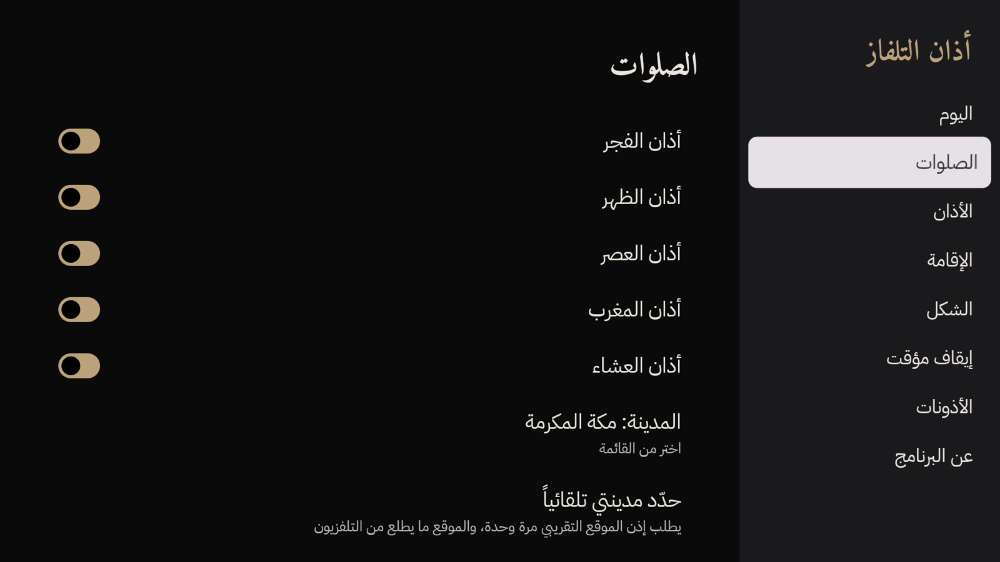
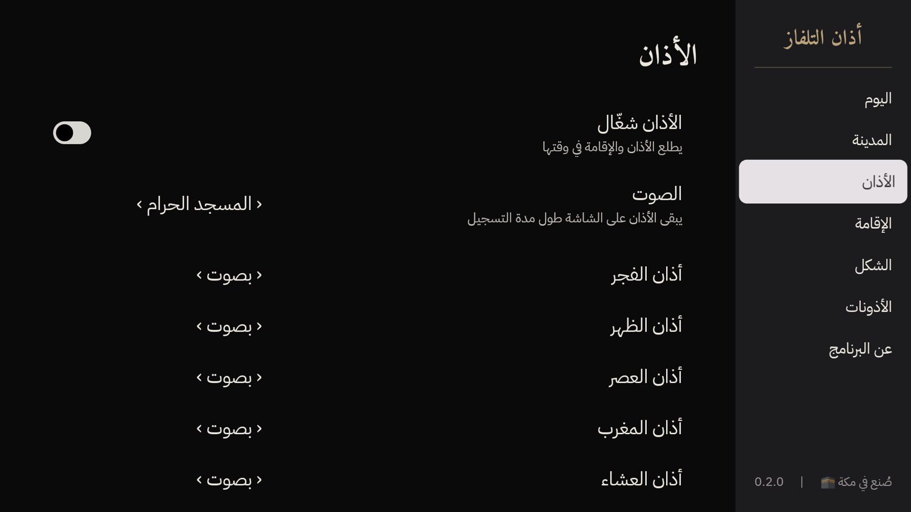
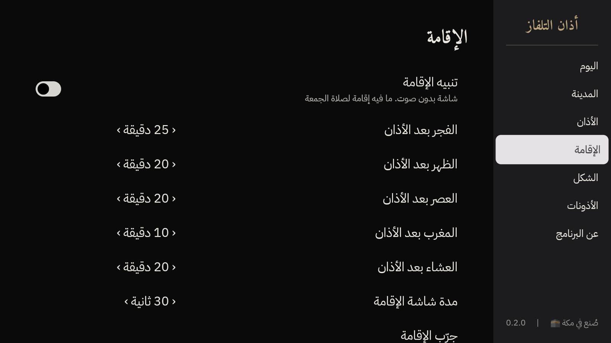
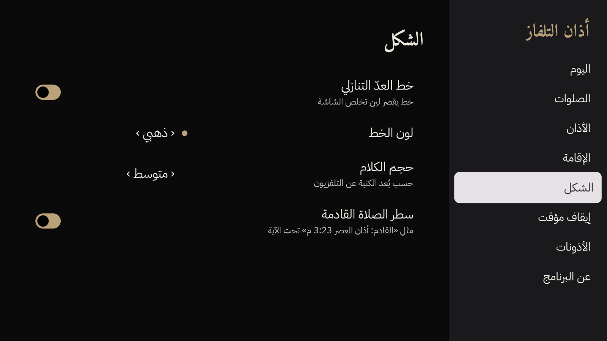
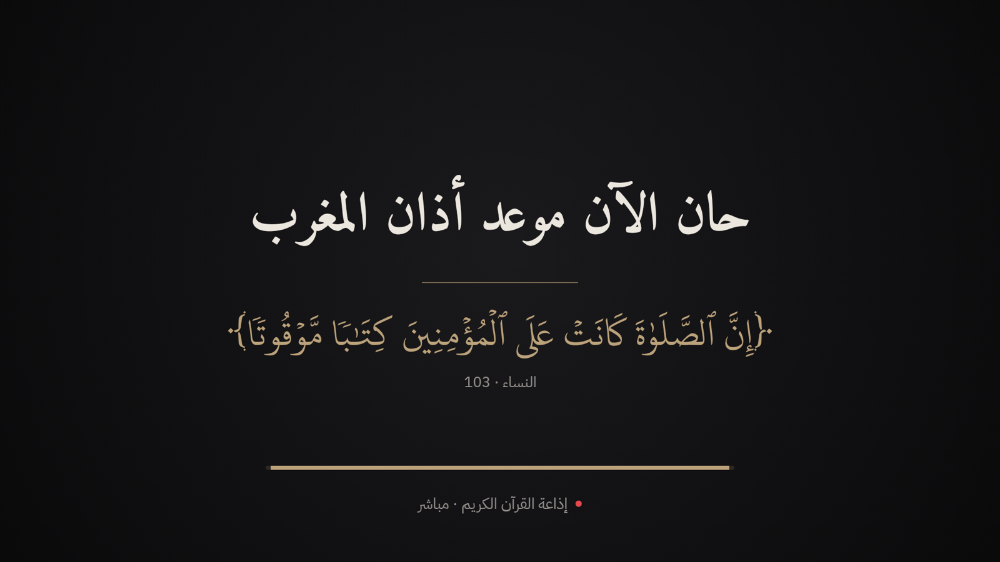
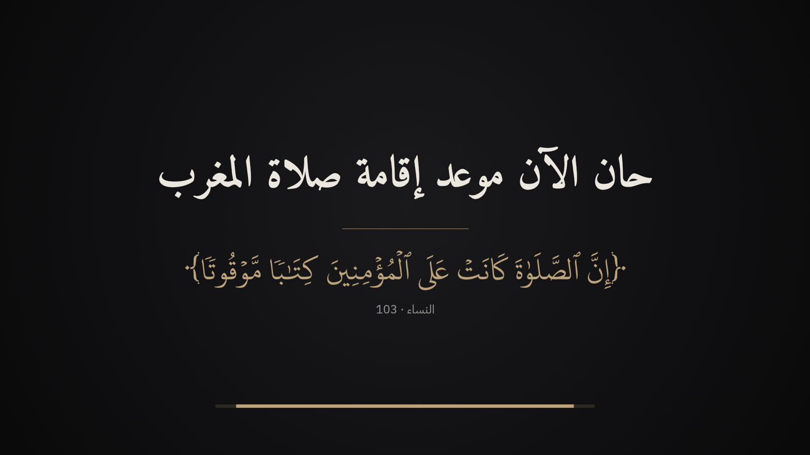
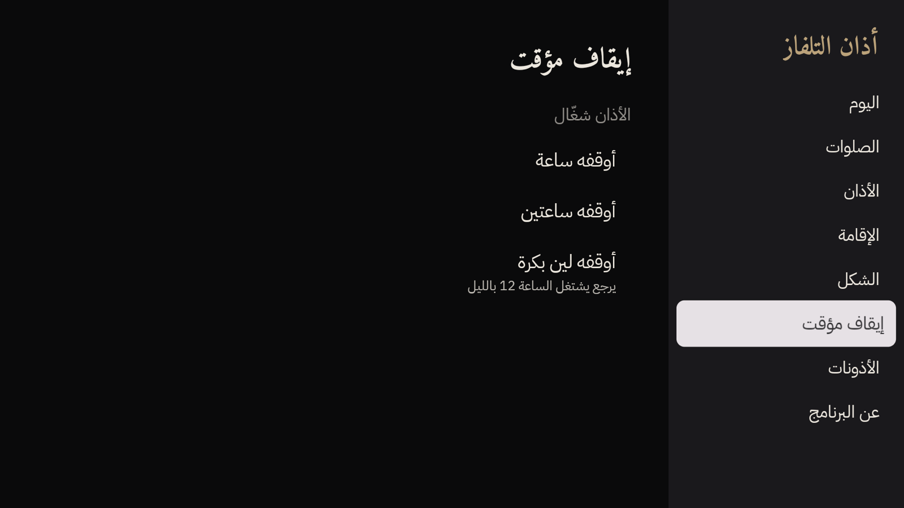
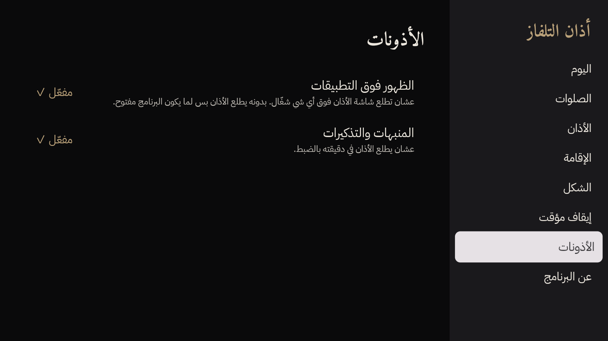

الإعداداتافتح «أذان التلفاز» من قائمة التطبيقات. القائمة على اليمين، والإعدادات جنبها، وOK يغيّر





أذان التلفاز3
الأذان والإقامة على شاشة التلفزيون في وقتها بالضبط، فوق أي شي شغّال، بصوت إذاعة القرآن الكريم أو أذان الحرم.
النساء · 103

مجاني · مفتوح المصدر · بدون إعلانات · لتلفزيونات Android TV و Google TV







تلقائي: «حدّد مدينتي تلقائياً» يطلب إذن الموقع التقريبي من النظام مرة وحدة. التلفزيون يعرف مكانه من الواي فاي، والبرنامج يختار أقرب مدينة. الموقع ما يطلع من التلفزيون.
يدوي: «اختر المدينة» فيه أكثر من 34 ألف مدينة حول العالم، وتبحث بالعربي أو الإنجليزي.
| الإذن | ليش | لازم؟ |
|---|---|---|
| الظهور فوق التطبيقات | عشان تطلع شاشة الأذان فوق اللي شغّال | اختياري، بدونه يطلع الأذان لما يكون البرنامج مفتوح |
| المنبهات والتذكيرات | عشان يطلع الأذان في ثانيته | مفعّل في أغلب التلفزيونات |
| الموقع التقريبي | لتحديد المدينة مرة وحدة | اختياري |
| الإنترنت | لصوت الإذاعة بس | — |
مشغّل الصوت العادي في التلفزيون ينتظر خمس ثواني قبل ما يبدأ، والإذاعة أول ما تتصل فيها ترسل ست ثواني صوت قديم. يعني الصوت كان متأخر حوالي 11 ثانية. البرنامج يسحب البث بنفسه ويتخطّى الصوت القديم، فيبدأ خلال ثانية ونص، ومتأخر ثانية وحدة بس عن البث.
إذاعة القرآن الكريم تنقل أذان مكة والرياض. في المدن الثانية ممكن يكون وقتها مختلف عن وقت أذانك، فيشتغل أذان الحرم المسجّل في الثانية نفسها. وتقدر تغيّر المصدر من قسم الأذان.
| الشي | المصدر | الرخصة |
|---|---|---|
| خط المصحف ونص الآيات | مجمع الملك فهد لطباعة المصحف الشريف، الملف الأصلي بدون أي تعديل | رخصة المجمع: استخدام ونسخ وتوزيع مجاني |
| أوقات الصلاة | تقويم أم القرى، بمكتبة adhan | MIT |
| الأذان المسجّل | أذان المغرب في المسجد الحرام، تسجيل 3omar Faruq على Wikimedia Commons | CC BY 3.0 |
| إذاعة القرآن الكريم | هيئة الإذاعة والتلفزيون | بث مباشر، ما ينحفظ |
| قائمة المدن | GeoNames | CC BY 4.0 |
| الخطوط | أميري و IBM Plex Sans Arabic | SIL OFL |
النص القرآني ما ينكتب باليد أبداً: ينسحب برمجياً من ملفات المجمع الرسمية.
فعّل وضع المطوّر و«تصحيح USB» في التلفزيون، وبعدها:
adb connect <TV-IP>:5555 adb install -r adhan-tv.apk
نظام TCL يمنع البرامج تصحى لحالها، فلازم تسمح لها مرة وحدة من الكمبيوتر:
adb shell appops set app.adhantv APP_AUTO_START allow adb shell appops set app.adhantv APP_ASSOC_START allow adb shell appops set app.adhantv SYSTEM_ALERT_WINDOW allow
بعدها تقدر تطفي وضع المطوّر، والبرنامج يكمّل يشتغل.
Google يطلب من حسابات المطوّرين الشخصية الجديدة اختبار مغلق قبل النشر: 12 مختبر على الأقل، لمدة 14 يوم متواصلة. بعدها تقدّم طلب النشر من لوحة Play Console.
| الشي | ليش |
|---|---|
| إذن مكتوب من هيئة الإذاعة والتلفزيون لاستخدام بث إذاعة القرآن | البث مفتوح تقنياً، بس الإذن الرسمي يحمي البرنامج من الحذف |
| شاشة في البرنامج تشرح أذونات TCL للمستخدم | المستخدم العادي ما عنده كمبيوتر ولا adb |
| جهاز ثاني غير TCL للتجربة | نتأكد إنه يشتغل على كل الأنواع |
افتح Issue في الريبو بعنوان «أبغى أجرّب»، ونضيفك للاختبار المغلق.
| المجلد | وش فيه |
|---|---|
| core/prayer | حساب الأوقات والإقامة والحدث الجاي. كوتلن صافي بدون أندرويد، ومعه اختبارات ضد أوقات أم القرى الرسمية. |
| app | برنامج التلفزيون: الإعدادات، والمنبّه، وشاشة الأذان، والصوت. |
| tools | سكربتات تبني البيانات من مصادرها الأصلية: المدن، والآيات، والأذان المسجّل، والأيقونات. |
| licenses و CREDITS.md | رخصة كل خط وكل مصدر. |
| docs/research | البحث ورا كل قرار: الرخص، وسياسة المتجر، والأوقات، والصوت. |
| .github | بناء واختبار تلقائي مع كل تعديل، ونماذج للمشاكل والأفكار. |
./gradlew :core:prayer:test assembleDebug lint adb install -r app/build/outputs/apk/debug/app-debug.apk
adb shell am broadcast -a app.adhantv.TEST -n app.adhantv/.schedule.TestReceiver \ --ei delay 60 --ei seconds 30